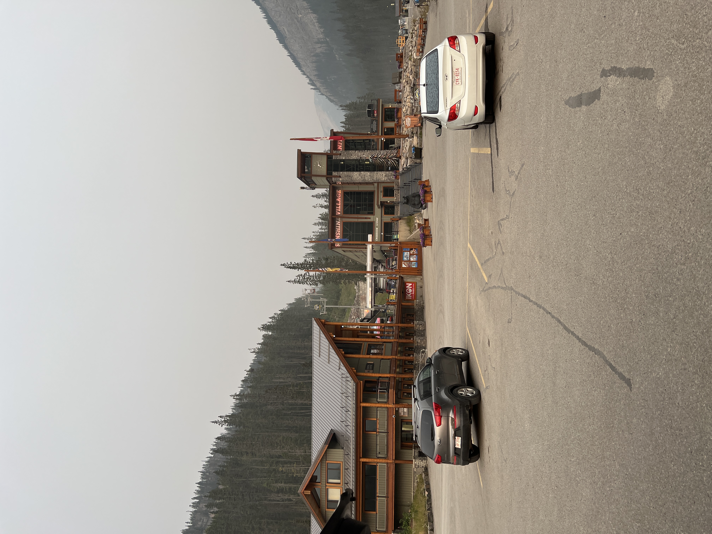
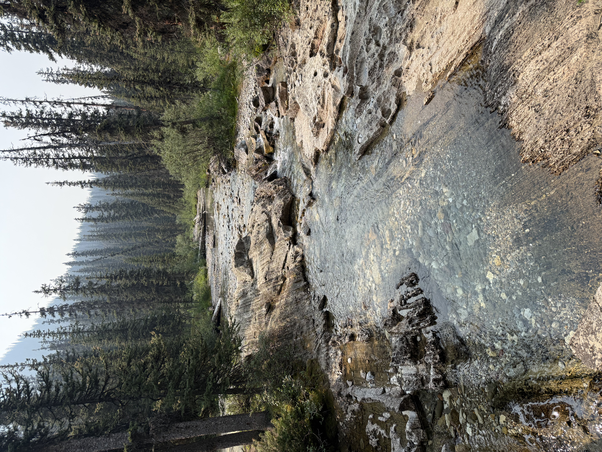
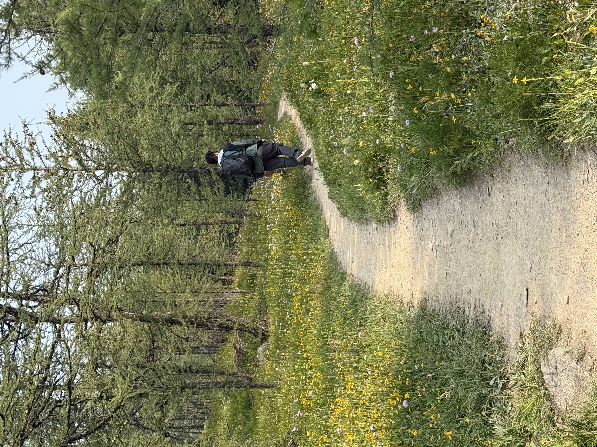
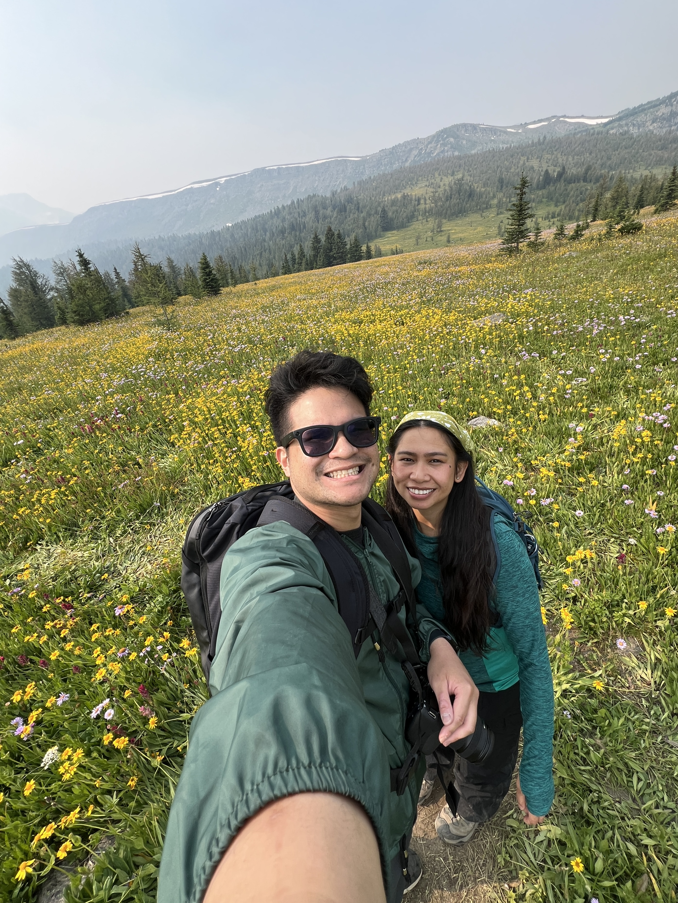
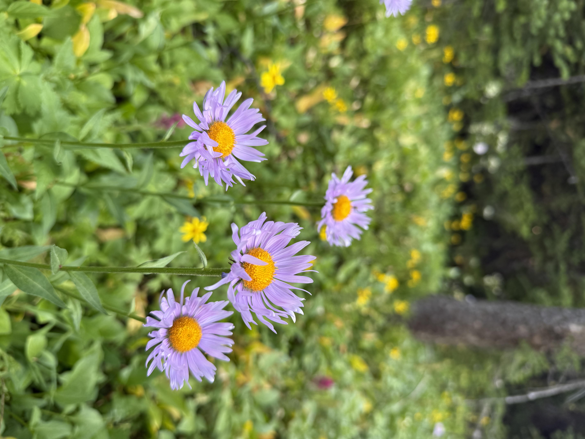
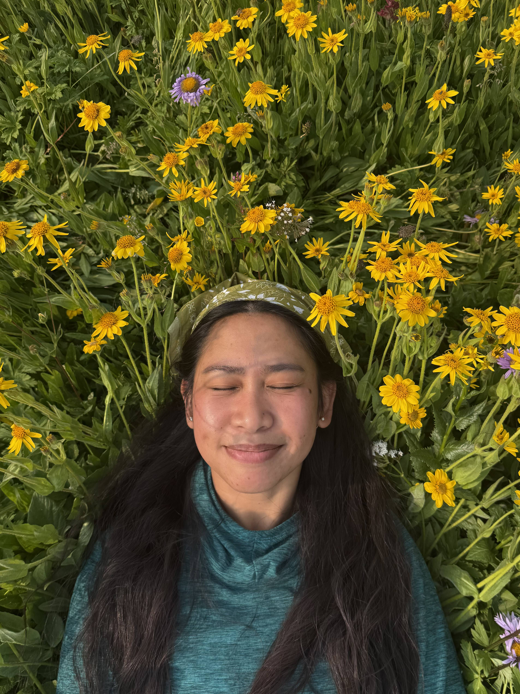
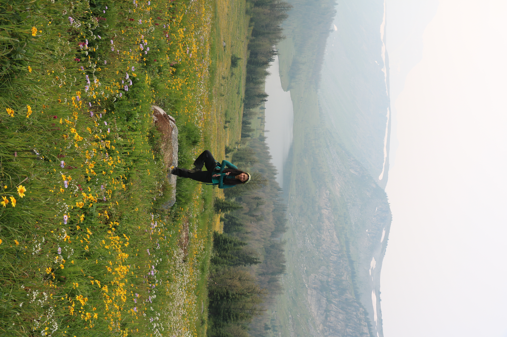
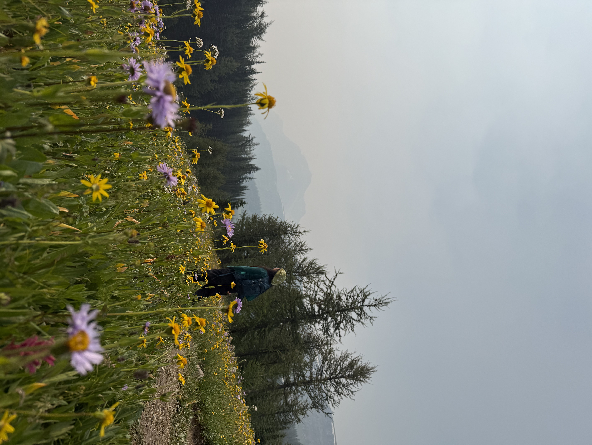
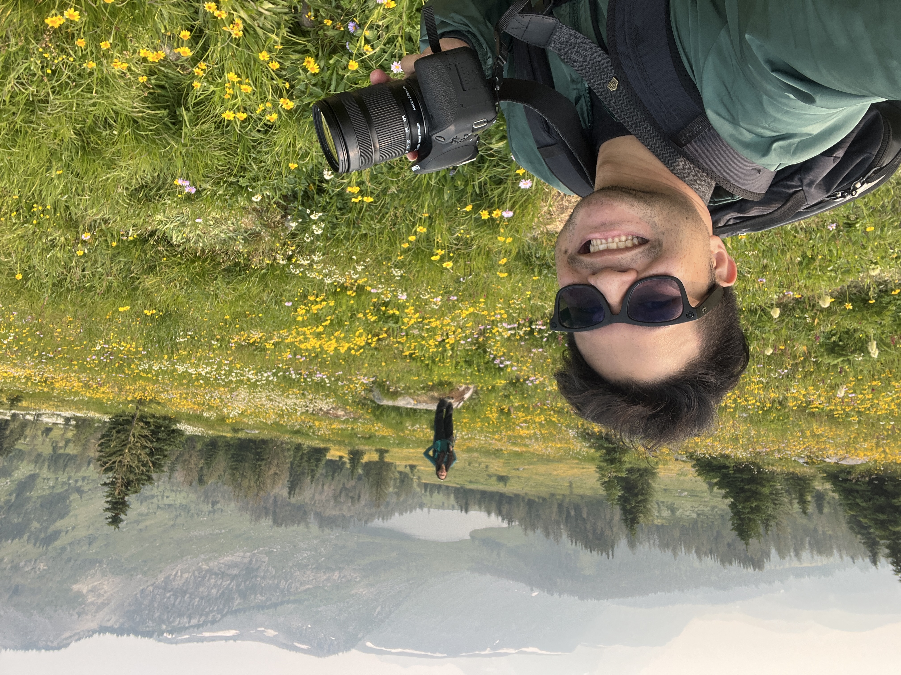
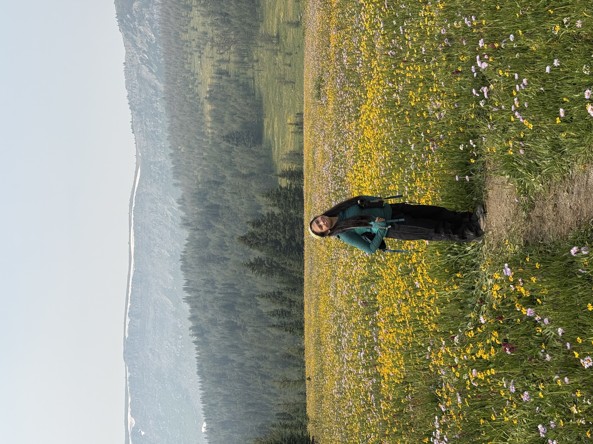

Aug 6 2026 — Healy Pass Wildflower Hike
Our Smokey, Sweet Summer Adventure
We hit up Healy Pass today, and it felt like stepping into a completely different world! We started our trek at Banff Sunshine, which felt different to see it outside of the winter months. We are so used to being bundled up and snowboarding here, so trading our snow gear for hiking boots and seeing the bare ground was a fun twist.
We saw mostly women on the hike, which makes me think the main attraction right now is the multiple, colorful and vibrant wildflower bloom! I couldn't tell you the proper names of a single flower we saw, but they were in full bloom and looked absolutely incredible, painting the meadows in bright yellows, purples, and whites.
We had to battle a lot of hungry mosquitoes along the way, making bug spray our absolute best friend. There was also a wildfire nearby, which explains why the air was so smoky. It gave the mountains this hazy, atmospheric filter in all our pictures, turning the landscape into a bit of a moody portrait. Despite the smoke and the relentless bugs, the endless sea of blooms made every single step worth it!
Wildflower Collage
A collection of our favorite moments from the hazy trail.









